点云配准数学原理
学习目的：
- 能够大致看懂技术算法的论文（理论理解能力）
- 能够将论文和代码对应起来（代码追踪能力）
- 知道常见算法函数的代码实现方式（算法实现能力）
注意！不要求能够推导、证明算法论文，因为这是理论研究者的重心。这不是我们应用型人才的重心，我们的重心是能够将理论更好的应用于实践。一定要有的放矢，提升自己的核心价值。
概念基础
三维点云的配准即是通过对点云的旋转、平移进行对齐，进而得到一个4x4的变换矩阵，包含3x3的旋转矩阵和3x1的平移向量。旋转矩阵可以通过罗格里格斯变换成一个1x3的旋转向量，故而最终是6个变量。
常用的点云配准算法是：迭代最近点算法(ICP)，正态分布变换配准(NDT)，基于特征不变性的配准 (ORB/FPFH/NARF)
其他演变算法及不同思路算法：
ICP拓展：稳健ICP、point to plane ICP、point to line ICP、MBICP、GICP
NDT拓展：NDT 3D、Multil-Layer NDT
其他：4PCS、Super-4PCS、FPCS、KFPSC、SAC-IA、Line Segment Matching、ICL
- ICP求解：四元数求解获得旋转矩阵、协方差矩阵求解SVD获得旋转矩阵
- KD tree优化
- NDT：probability density functions：PDF概率密度函数
迭代最近点算法(ICP)
本例我们讲解基于奇异值分解（SVD）的方法求解迭代最近点算法（ICP）。目的是匹配两个点云集合。算出他们之间的变换关系。
除此之外还有基于四元数求解ICP。
问题描述
假如我们有两个3D点云集合作为输入：
p=\{p_1,p_2, \ldots, p_n \} 和 q=\{q_1,q_2, \ldots, q_n \}
要求得一个旋转矩阵 R^{(3\times3)} 和一个平移向量 t^{(3 \times 1)} 使得：
p_i = Rq_i + t
即，将点云 q 通过旋转、平移到目标 p，由于两朵点云可能不是完全相同的，也可能是从不同角度获取的相同目标的点云，所以往往我们不能得到一个准确的R和t使以上等式成立。但是我们可以让经过变换后的点云 q 尽可能的靠近 p ，即我们可以定义每一项的点对误差项：
e_i = p_i - (Rq_i + t)
进而构建最小二乘问题，将之转化为目标函数的优化问题，求以使以下目标函数误差的平方和达到极小时的R和t：
E(R, t) =arg\min _{R, t}\frac{1}{2} \sum_{i=1}^{n}\left\|\left(\boldsymbol{p}_{i}-\left(\boldsymbol{R} \boldsymbol{q}_{i}+\boldsymbol{t}\right)\right)\right\|^{2}
确定目标函数
假设R是常量，则先求平移向量t ，令 \dfrac {\partial E}{\partial t}=0 , 可得目标函数
\min _{R, t} E= - \sum_{i=1}^{n}\left(\boldsymbol{p}_{i}-\left(\boldsymbol{R} \boldsymbol{q}_{i}+\boldsymbol{t}\right)\right) = 0
展开得：
\min _{R, t} E= \sum_{i=1}^{n} \boldsymbol{p}_i - \boldsymbol{R} \cdot \sum_{i=1}^{n} \boldsymbol{q}_i - \boldsymbol{t} \cdot \sum_{i=1}^{n} 1 = 0
令 \boldsymbol{p} 的质心 \mu_p = \dfrac {1}{n} \cdot \sum_{i=1}^n {p_i} , \boldsymbol{q} 的质心 \mu_q = \dfrac {1}{n} \cdot \sum_{i=1}^n {q_i}
则可得 t = \mu_p - R \cdot \mu_q
\begin{align*}
E(R, t)
&=arg\min _{R, t}\frac{1}{2} \sum_{i=1}^{n}\left\|\boldsymbol{p}_{i}-\boldsymbol{R} \boldsymbol{q}_{i}-\boldsymbol{t}\right\|^{2}\\
&=arg\min _{R, t}\frac{1}{2} \sum_{i=1}^{n}\left\|\boldsymbol{p}_{i}-\boldsymbol{R} \boldsymbol{q}_{i}-\mu_p + R \cdot \mu_q\right\|^{2}\\
&=arg\min _{R, t}\frac{1}{2} \sum_{i=1}^{n}\left\|\boldsymbol{p}_{i}-\mu_p-\boldsymbol{R} (\boldsymbol{q}_{i} -\mu_q)\right\|^{2}\\
&=arg\min _{R, t}\frac{1}{2} \sum_{i=1}^{n}\left\|\boldsymbol{p}_{i}^{\prime}-\boldsymbol{R} \boldsymbol{q}_{i}^{\prime}\right\|^{2}\\
\end{align*}
这里， \boldsymbol{p}_{i}^{\prime} , \boldsymbol{q}_{i}^{\prime} 分别是每个点云根据其质心坐标 \boldsymbol{\mu}_p, \boldsymbol{\mu}_q 计算得到的去质心坐标：
\boldsymbol{p}_{i}^{\prime}=\boldsymbol{p}_{i}-\boldsymbol{\mu}_p\\
\boldsymbol{q}_{i}^{\prime}=\boldsymbol{q}_{i}-\boldsymbol{\mu}_q\\
即求使得以下目标函数最小时，R的值
arg\min _{R} =\frac{1}{2} \sum_{i=1}^{n}\left\|\boldsymbol{p}_{i}^{\prime}-\boldsymbol{R} \boldsymbol{q}_{i}^{\prime}\right\|^{2}\\
我们将 \sum_{i=1}^{n}\left\|\boldsymbol{p}_{i}^{\prime}-\boldsymbol{R} \boldsymbol{q}_{i}^{\prime}\right\|^{2} 展开可得 {p_i^\prime}^Tp_i^\prime - 2{p_i^\prime}^TRq_i^\prime + {q_i^\prime}^TR^TRq_i^\prime
此时，我们发现，除了第二项以外，目标函数其他部分都与参数R无关，进而在求解极值时可忽略。进而我们将问题转换为求解使以下目标函数最小时，R的值：
arg\min _{R} \left(\frac{1}{2} \cdot (-2) \sum_{i=1}^{n}{p_i^\prime}^TRq_i^\prime\right)\\
求解步骤
1、求最大化目标函数
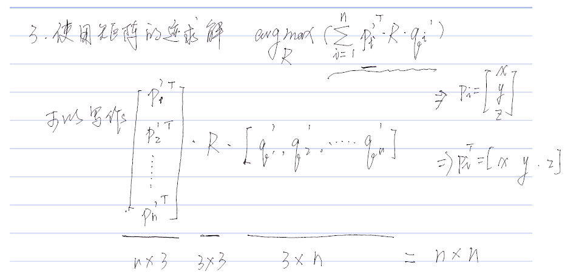
2、矩阵进行SVD奇异值分解
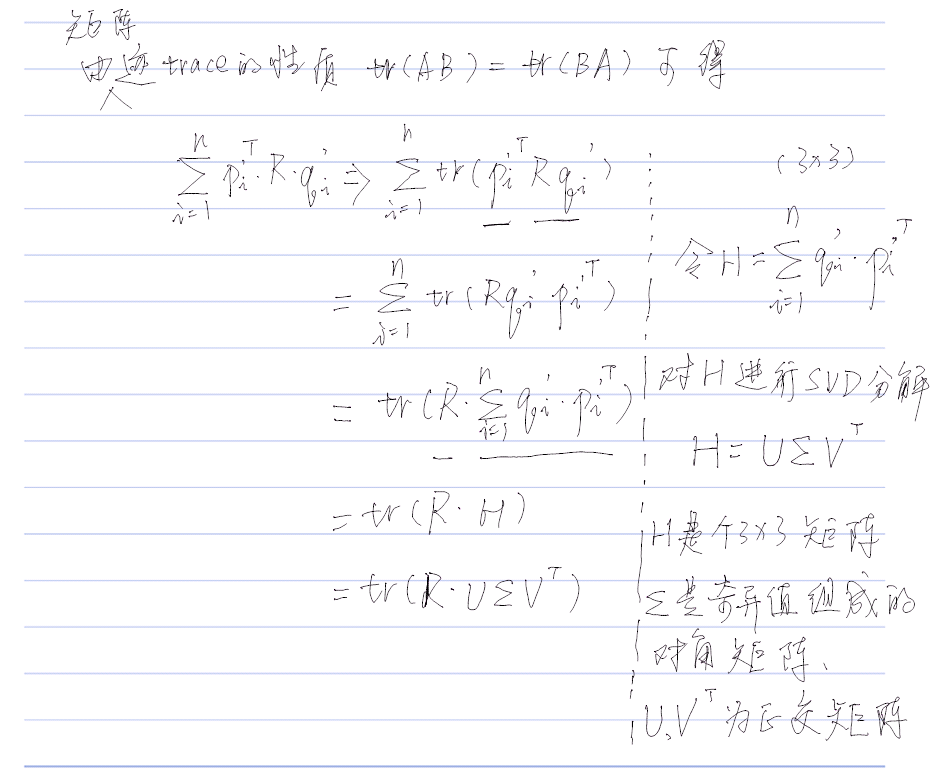
3、正定矩阵迹的性质
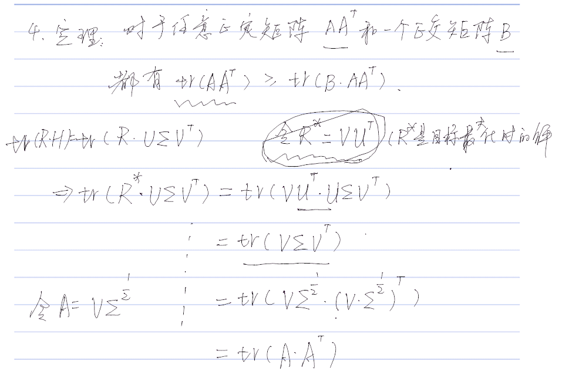
4、根据迹性质得出目标函数最大化时R的解
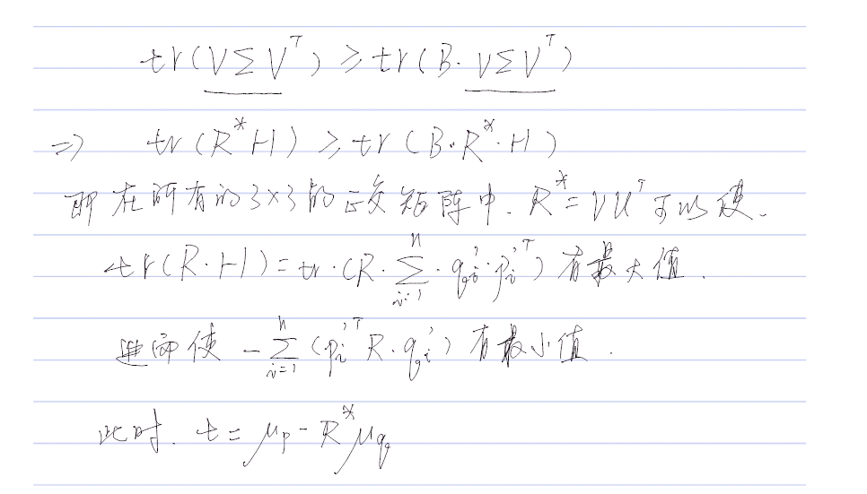
5、ICP结果注意
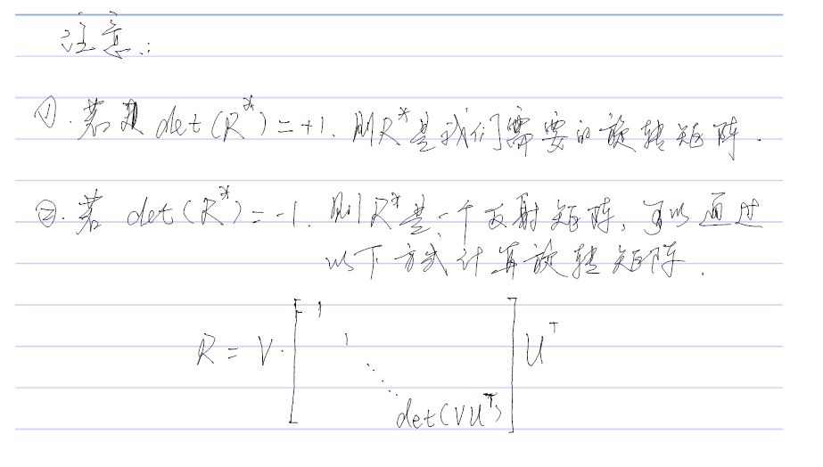
正态分布变换配准(NDT)
NDT表示目标表面
直接使用点云来表示目标的表面是不够的，比如，点云不能显式的表示关于表面的信息（方向、平滑度、孔洞等）。根据数据采集器的不同，点云的内容也可能是低效的，需要大量不必要的存储信息。为了在远离数据采集器的地方能够得到足够的样本分辨率，通常需要采集大量的冗余数据。
正态分布变换（ Normal Distributions Transform ， NDT）是一种描述曲面的较好方式。该变换将点云映射到平滑的表面，通过一组局部概率密度函数 local probability density functions(PDFs)来描述，每个PDF描述了表面的一个小局域的形状。
该算法的第一部是将扫描到的内容所占据的空间分割成网格单元cells（2D下为正方形，3D下为正方体），然后基于每个cell内部点的分布，计算其PDF。每个单元cell中的PDF可以理解为内部点\vec{x}的生成器。换句话说，我们可以认为\vec{x}的位置是由PDF生成的。
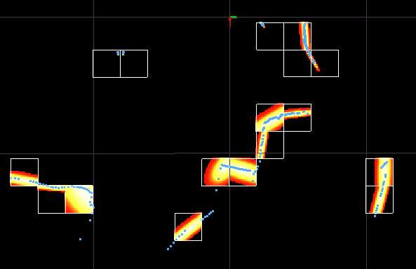
图6.1：一个2D的激光扫描仪在矿井坑道中扫描到的点，以及对应的PDFs描述的表面形状。本例中，每个小格子边长是2m，发光区域表示了高概率区域。PDFs只计算那些点数量大于5个的单元cell。
假设这些参考点云表面的点的位置是通过D维的随机正态分布过程生成的，那么这些测得的\vec{x}点的PDF似然函数为：
\begin{equation}p(\vec{x})=\frac{1}{(2 \pi)^{D / 2} \sqrt{|\Sigma|}} \exp \left(-\frac{(\vec{x}-\vec{\mu})^{\mathrm{T}} \Sigma^{-1}(\vec{x}-\vec{\mu})}{2}\right)\tag{6.1}\end{equation}
这里的\vec{\mu}和\Sigma分别是 \vec{x} 点所在的cell内所有点的平均值向量（均值点）和协方差矩阵。系数\left((2 \pi)^{D / 2} \sqrt{|\Sigma|}\right)^{-1}可以缩放该函数使其积分为1。为了简洁起见，我们使用常量c_0代替他。均值和协方差通过如下公式计算：
\begin{equation}\vec{\mu}=\frac{1}{m} \sum_{k=1}^{m} \vec{y}_{k}\tag{6.2}\end{equation}
\begin{equation}\boldsymbol{\Sigma}=\frac{1}{m-1} \sum_{k=1}^{m}\left(\vec{y}_{k}-\vec{\mu}\right)\left(\vec{y}_{k}-\vec{\mu}\right)^{\mathrm{T}}\tag{6.3}\end{equation}
这里\vec{y}_{k=1,...,m}表示每个cell中参考点位置的集合。
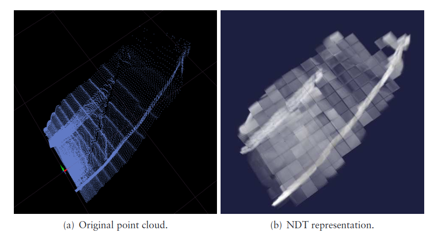
图6.2：3D-NDT表面表示的隧道截面，从上面看。更亮、更密集的部分表示更高的概率。cell的边长为1米
正态分布给出了具有连续导数的点云的分段光滑表示。每个PDF都可以看作是局部表面的近似，描述了表面的位置以及它的方向和平滑度。二维激光扫描及其对应的正态分布如图6.1所示。图6.2描述了矿井巷道扫描的三维常规分布。
正态分布
由于目前的工作主要集中在正态分布上，让我们更仔细地研究一下单变量和多变量正态分布的特征。在一维情况下，一个标准随机正态分布的变量x具有一个确定的预期变量\mu（均值）和一个用来表示不确定性的变量\sigma（方差）。
\begin{equation}p(x)=\frac{1}{\sigma \sqrt{2 \pi}} \exp \left(-\frac{(x-\mu)^{2}}{2 \sigma^{2}}\right)\end{equation}
\tag{6.4}
如方程6.1所描述的多元概率函数p(\vec{x})在一维的情况下即可以退化到以上6.4的函数。在多维情况下，均值和方差将以均值向量 \vec{\mu} 和协方差矩阵 \Sigma 的形式描述。协方差矩阵的对角元素表示每个变量的方差，非对角元素表示变量的协方差。图6.3说明了在一维、二维、三维情况下的正态分布。
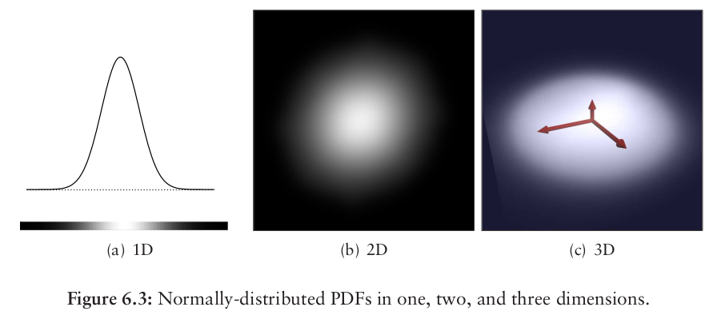
在2D和3D情况下，表面的方向信息和平滑度信息可以从协方差矩阵的特征向量和特征值中估算出来，特征向量描述了分布的主要部分：即一个正交向量集合，对应于各变量协方差的主方向。根据方差的比例，二维正态分布可以是点形(如果方差相似)或线形(如果一个比另一个大得多)，或者介于两者之间。在三维情况下，参见图6.4的描述，一个正态分布可以表现为一个点或球体（如果方差的大小在各个方向上差不多），一条线（如果一个方向的方差远远大于另两个方向）或一个平面（如果一个方向的方差远小于另两个方向）。
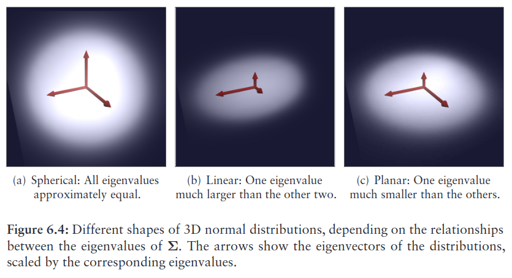
NDT扫描配准
scan registration
当我们使用NDT技术对扫描数据进行配准时，我们的目标是找到一个当前扫描数据Source的位姿变换，这个变换可以使当前扫描点云表面与参考点云表面Target尽可能的重叠（使似然函数最大化）。将要被优化的参数即是估算出的位姿变换中包含的旋转和平移两部分；他们可以被编码为一个向量\vec{p}。当前的扫描数据可以表述为一个点云\mathcal{X}=\left\{\vec{x}_{1}, \ldots, \vec{x}_{k}\right\}，假设存在一个空间变换函数T(\vec{p}, \vec{x})可以将一个空间中的点 \vec{x} 通过位姿变换 \vec{p} 进行移动。给定一些PDF概率密度函数p(\vec{x})（如方程6.1）到扫描的点数据，则最佳的位姿变换 \vec{p} 应当是可以最大化以下似然函数的那个
\begin{equation}\Psi=\prod_{k=1}^{n} p\left(T\left(\vec{p}, \vec{x}_{k}\right)\right)\end{equation}
\tag{6.5}
这里T(\vec{p}, \vec{x})将\mathcal{X}中第k个点进行了位姿变换，将变换后的结果通过PDF概率密度函数计算其在参考点云（目标点云Target）所属cell中对应位置的概率。最后将得到的概率进行求积运算。
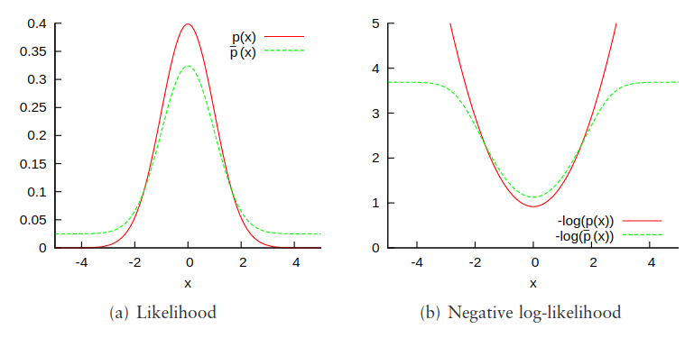
图 6.5：对比一个正态分布p(x)和混合模型\bar{p}(x)。负对数似然函数-log(p(x))也可以是进行NDT扫描配准时的目标函数，它的导数表征了特定测量值对结果的偏置。
对于正态分布p(x)，较大的x值对结果的影响过大（没有边界），但是对于混合模型\bar{p}(x)就没那么大（有边界）。或者同样的，最小化似然函数\Psi的负对数：
\begin{equation}-\log \Psi=-\sum_{k=1}^{n} \log \left(p\left(T\left(\vec{p}, \vec{x}_{k}\right)\right)\right)\end{equation}
\tag{6.6}
PDF概率密度函数未必非得是正态分布。任何一种局部捕获表面点结构并对异常值具有鲁棒性的PDF都是合适的。正态分布的负对数似然函数，在参数远离均值的地方变化，其结果会不受约束地增长（结果没有边界），因此，那些扫描数据以外的离群值（异常值）可能会对结果造成很大的影响。于是，我们通过正态分布和均匀分布的混合使用来解决这个问题：
\begin{equation}\bar{p}(\vec{x})=c_{1} \exp \left(-\frac{(\vec{x}-\vec{\mu})^{\mathrm{T}} \mathbf{\Sigma}^{-1}(\vec{x}-\vec{\mu})}{2}\right)+c_{2} p_{o}\end{equation}
，（6.7）
p_0是离群值期望的比例，通过此函数，使离群值的影响有边界。常量c_1和c_2可以通过将Cell分割出的空间中的\overline {p}( \overrightarrow {x})概率质量等于1来决定。
要优化的对数似然函数的和由以下项组成-\log \left(c_{1} \exp \left(-\left((\vec{x}-\vec{\mu})^{\mathrm{T}} \Sigma^{-1}(\vec{x}-\vec{\mu})\right) / 2\right)+c_{2}\right)，它们没有简单的一阶和二阶导数，尽管如此，图(b)结果表明，对数似然函数可以近似为高斯函数，即将如下形式的函数\bar{p}(x)=-\log \left(c_{1} \exp \left(-x^{2} /\left(2 \sigma^{2}\right)\right)+c_{2}\right)近似为高斯函数\tilde{p}(x)=d_{1} \exp \left(-d_{2} x^{2} /\left(2 \sigma^{2}\right)\right)+d_{3}。为了得到对应的d_i值，我们可以要求\tilde{p}(x)=\bar{p}(x)，并且在x=0, x=σ, x=∞时，求出d_1, d_2, d_3
\begin{array}{l}
d_{3}=-\log \left(c_{2}\right) \\
d_{1}=-\log \left(c_{1}+c_{2}\right)-d_{3} \\
d_{2}=-2 \log \left(\left(-\log \left(c_{1} \exp (-1 / 2)+c_{2}\right)-d_{3}\right) / d_{1}\right)
\end{array}
\tag{6.8}
通过这样的高斯近似，当前扫描的某个点对NDT的评分函数为：
\begin{equation}\tilde{p}\left(\vec{x}_{k}\right)=-d_{1} \exp \left(-\frac{d_{2}}{2}\left(\vec{x}_{k}-\vec{\mu}_{k}\right)^{\mathrm{T}} \boldsymbol{\Sigma}_{k}^{-1}\left(\vec{x}_{k}-\vec{\mu}_{k}\right)\right)\tag{6.9}\end{equation}
\vec{\mu}_{k}和\boldsymbol{\Sigma}_{k}是\vec{x}_{k}所在的NDT格子cell的均值和协方差，这个评分函数的求导要比等式6.7的对数log求导更简单，并且在优化时仍然可以表现出相同的一般属性，注意在6.9中，d_3已经被去掉了，因为他在用NDT做扫描配准的时候不需要，仅仅是给评分函数添加了一个固定的偏差，而不会改变它的形状或其要优化的参数。
给定一个点的集合\mathcal{X}=\left\{\vec{x}_{1}, \ldots, \vec{x}_{n}\right\}，一个位姿变换向量\vec{p}，和一个变换函数T(\vec{p}, \vec{x})，将空间中的点\vec{x}通过进行变换，那么NDT的评分函数s(\vec{p})用当前的参数向量表达如下：
\begin{equation}s(\vec{p})=-\sum_{k=1}^{n} \tilde{p}\left(T\left(\vec{p}, \vec{x}_{k}\right)\right)\tag{6.10}\end{equation}
此函数描述了的点集\vec{x}_k在经过\vec{p} 变换后，与参考扫描点集\vec{y}_k的相似程度。
牛顿（Newton）算法可以用来查找用来优化s(\vec{p})的参数\vec{p}。牛顿法的核心是迭代求解等式\mathrm{H} \Delta \vec{p}=-\vec{g}
- \mathrm{H}是Hessian matrix，黑塞（海森）矩阵
- \vec{g}是s(\vec{p})的gradient vector，梯度向量，即s(\vec{p})的雅克比矩阵的转置\mathrm{J}^T
- 增量\Delta \vec{p}会在每次迭代时，加到当前的位姿估计\vec{p}中，即\vec{p} \leftarrow \vec{p}+\Delta \vec{p}
牛顿法就是用一个二次曲面去拟合你当前所处位置的局部曲面，而梯度下降法是用一个平面去拟合当前的局部曲面，通常情况下，二次曲面的拟合会比平面更好，所以牛顿法选择的下降路径会更符合真实的最优下降路径。下图中红线表示牛顿法，绿线表示梯度下降法。
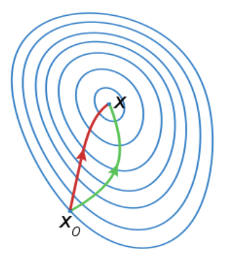
为了简洁起见，我们令\vec{x}_{k}^{\prime} \equiv T\left(\vec{p}, \vec{x}_{k}\right)-\vec{\mu}_{k}。\vec{x}_{k}^{\prime}是点\vec{x}_{k}通过当前的位姿变换参数执行变换后，相对于所属格子cell的PDF（概率密度函数）中心的位置，则目标评分函数和梯度向量\vec{g}的中心g_i函数如下：
目标评分函数 s(\vec{p}) ：
\begin{equation}s(\vec{p})=\sum_{k=1}^{n}d_{1} \exp \left(-\frac{d_{2}}{2}{\vec{x}_{k}^{\prime}}^{\mathrm{T}} \boldsymbol{\Sigma}_{k}^{-1}\vec{x}_{k}^{\prime}\right)\end{equation}
梯度向量\vec{g}的中心g_i函数，这里p_i表示\vec{p}的第i个值，二维下有3个值，三维下有6个值：
\begin{equation}g_{i}=\frac{\delta s}{\delta p_{i}}=\sum_{k=1}^{n} d_{1} d_{2} {\vec{x}_{k}^{\prime}}^{\mathrm{T}} \boldsymbol{\Sigma}_{k}^{-1} \frac{\delta \vec{x}_{k}^{\prime}}{\delta p_{i}} \exp \left(\frac{-d_{2}}{2} {\vec{x}_{k}^{\prime}}^{\mathrm{T}} \boldsymbol{\Sigma}_{k}^{-1} \vec{x}_{k}^{\prime}\right)\tag{6.12}\end{equation}
则此时黑塞矩阵\mathrm{H}的中心函数H_{ij} 为：
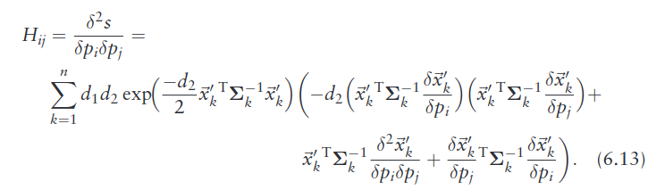
匹配准流程
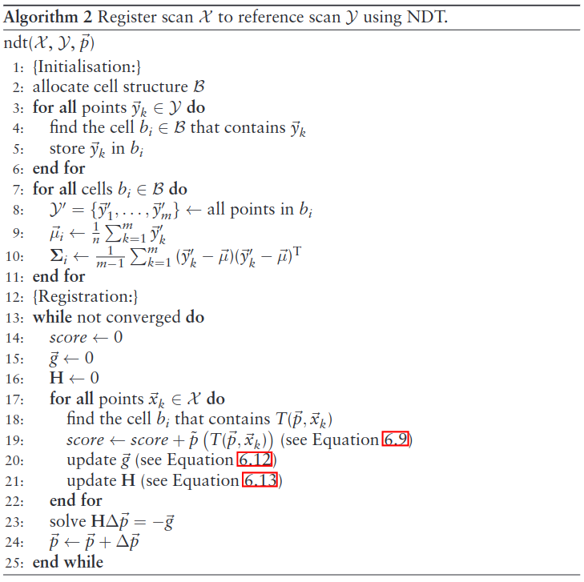
2D-NDT
在2D配准时，有三个变换参数需要优化，令\vec{p}=\left[t_{x}, t_{y}, \phi\right]^{\mathrm{T}}，t_x和t_y是平移参数，\phi是旋转角度。使用逆时针旋转，2D的变换函数为：
\begin{equation}T_{2}(\vec{p}, \vec{x})=\left[\begin{array}{cc}
\cos \phi & -\sin \phi \\
\sin \phi & \cos \phi
\end{array}\right] \vec{x}+\left[\begin{array}{c}
t_{x} \\
t_{y}
\end{array}\right]\tag{6.14}\end{equation}
使用这个2D变换函数，一阶导数\delta \vec{x}^{\prime}/ \delta{p}_i 用来计算方程6.12的雅克比矩阵的第i列
\begin{equation}\mathbf{J}_{2}=\left[\begin{array}{ccc}
1 & 0 & -x_{1} \sin \phi-x_{2} \cos \phi \\
0 & 1 & x_{1} \cos \phi-x_{2} \sin \phi
\end{array}\right]\tag{6.15}\end{equation}
且方程6.13用到的二阶导数为：
\begin{equation}\frac{\delta^{2} \vec{x}^{\prime}}{\delta p_{i} \delta p_{j}}=\left\{\begin{array}{cl}
{\left[\begin{array}{c}
-x_{1} \cos \phi+x_{2} \sin \phi \\
-x_{1} \sin \phi-x_{2} \cos \phi
\end{array}\right]} & \text { if } i=j=3 \\
{\left[\begin{array}{l}
0 \\
0
\end{array}\right]} & \text {otherwise}
\end{array}\right.\end{equation}\tag{6.16}
3D-NDT
二维与三维NDT配准的主要区别在于空间变换函数T(\vec{p}，\vec{x})及其偏导数。在两种情况下，旋转用一个值来表示绕原点旋转的角度，最简单的变换函数是方程式6.14。在三维情况下，有多种方法来表示旋转，这里我们以3D欧拉角为例，首先声明一个6维的参数向量来表示位姿：\vec{p}_{6}=\left[t_{x}, t_{y}, t_{z}, \phi_{x}, \phi_{y}, \phi_{z}\right]^{\mathrm{T}}
然后按照z-y-x的欧拉角旋转顺序，则3D的变换函数为：
\begin{equation}\begin{aligned}
T_{E}\left(\vec{p}_{6}, \vec{x}\right) &=\mathrm{R}_{x} \mathrm{R}_{y} \mathrm{R}_{z} \vec{x}+\vec{t} \\
&=\left[\begin{array}{ccc}
c_{y} c_{z} & -c_{y} s_{z} & s_{y} \\
c_{x} s_{z}+s_{x} s_{y} c_{z} & c_{x} c_{z}-s_{x} s_{y} s_{z} & -s_{x} c_{y} \\
s_{x} s_{z}-c_{x} s_{y} c_{z} & c_{x} s_{y} s_{z}+s_{x} c_{z} & c_{x} c_{y}
\end{array}\right] \vec{x}+\left[\begin{array}{c}
t_{x} \\
t_{y} \\
t_{z}
\end{array}\right]
\end{aligned}\end{equation}\tag{6.17}
其中，c_i = cos\phi_i和s_i = sin\phi_i，以上方程的一阶导数(\delta / \delta{p}_i)T_{E}\left(\vec{p}_{6}, \vec{x}\right)对应雅克比矩阵的第i列：
\begin{equation}\mathrm{J}_{E}=\left[\begin{array}{cccccc}
1 & 0 & 0 & 0 & c & f \\
0 & 1 & 0 & a & d & g \\
0 & 0 & 1 & b & e & h
\end{array}\right]\end{equation}
\tag{6.18}
且
\begin{equation}\begin{aligned}
a &=x_{1}\left(-s_{x} s_{z}+c_{x} s_{y} c_{z}\right)+x_{2}\left(-s_{x} c_{z}-c_{x} s_{y} s_{z}\right)+x_{3}\left(-c_{x} c_{y}\right) \\
b &=x_{1}\left(c_{x} s_{z}+s_{x} s_{y} c_{z}\right)+x_{2}\left(-s_{x} s_{y} s_{z}+c_{x} c_{z}\right)+x_{3}\left(-s_{x} c_{y}\right) \\
c &=x_{1}\left(-s_{y} c_{z}\right)+x_{2}\left(s_{y} s_{z}\right)+x_{3}\left(c_{y}\right) \\
d &=x_{1}\left(s_{x} c_{y} c_{z}\right)+x_{2}\left(-s_{x} c_{y} s_{z}\right)+x_{3}\left(s_{x} s_{y}\right) \\
e &=x_{1}\left(-c_{x} c_{y} c_{z}\right)+x_{2}\left(c_{x} c_{y} s_{z}\right)+x_{3}\left(-c_{x} s_{y}\right) \\
f &=x_{1}\left(-c_{y} s_{z}\right)+x_{2}\left(-c_{y} c_{z}\right) \\
g &=x_{1}\left(c_{x} c_{z}-s_{x} s_{y} s_{z}\right)+x_{2}\left(-c_{x} s_{z}-s_{x} s_{y} c_{z}\right) \\
b &=x_{1}\left(s_{x} c_{z}+c_{x} s_{y} s_{z}\right)+x_{2}\left(c_{x} s_{y} c_{z}-s_{x} s_{z}\right)
\end{aligned}\end{equation}
\tag{6.19}
二阶导数\left(\delta^{2} /\left(\delta p_{i} \delta p_{j}\right)\right) T_{E}\left(\vec{p}_{6}, \vec{x}\right)对应对称方阵的元素\vec{H}_{ij}：
\begin{equation}\mathrm{H}_{E}=\left[\begin{array}{ccc}
\vec{H}_{11} & \cdots & \vec{H}_{16} \\
\vdots & \ddots & \vdots \\
\vec{H}_{61} & \cdots & \vec{H}_{66}
\end{array}\right]=\left[\begin{array}{cccccc}
\overrightarrow{0} & \overrightarrow{0} & \overrightarrow{0} & \overrightarrow{0} & \overrightarrow{0} & \overrightarrow{0} \\
\overrightarrow{0} & \overrightarrow{0} & \overrightarrow{0} & \overrightarrow{0} & \overrightarrow{0} & \overrightarrow{0} \\
\overrightarrow{0} & \overrightarrow{0} & \overrightarrow{0} & \overrightarrow{0} & \overrightarrow{0} & \overrightarrow{0} \\
\overrightarrow{0} & \overrightarrow{0} & \overrightarrow{0} & \vec{a} & \vec{b} & \vec{c} \\
\overrightarrow{0} & \overrightarrow{0} & \overrightarrow{0} & \vec{b} & \vec{d} & \vec{e} \\
\overrightarrow{0} & \overrightarrow{0} & \overrightarrow{0} & \vec{c} & \vec{e} & \vec{f}
\end{array}\right]\end{equation}
\tag{6.20}
且
\begin{equation}\begin{array}{l}
\vec{a}=\left[\begin{array}{c}
0 \\
x_{1}\left(-c_{x} s_{z}-s_{x} s_{y} c_{z}\right)+x_{2}\left(-c_{x} c_{z}+s_{x} s_{y} s_{z}\right)+x_{3}\left(s_{x} c_{y}\right) \\
x_{1}\left(-s_{x} s_{z}+c_{x} s_{y} c_{z}\right)+x_{2}\left(-c_{x} s_{y} s_{z}-s_{x} c_{z}\right)+x_{3}\left(-c_{x} c_{y}\right)
\end{array}\right] \\
\vec{b}=\left[\begin{array}{c}
0 \\
x_{1}\left(c_{x} c_{y} c_{z}\right)+x_{2}\left(-c_{x} c_{y} s_{z}\right)+x_{3}\left(c_{x} s_{y}\right) \\
x_{1}\left(s_{x} c_{y} c_{z}\right)+x_{2}\left(-s_{x} c_{y} s_{z}\right)+x_{3}\left(s_{x} s_{y}\right)
\end{array}\right] \\
\vec{c}=\left[\begin{array}{c}
0 \\
x_{1}\left(-s_{x} c_{z}-c_{x} s_{y} s_{z}\right)+x_{2}\left(-s_{x} s_{z}-c_{x} s_{y} c_{z}\right) \\
x_{1}\left(c_{x} c_{z}-s_{x} s_{y} s_{z}\right)+x_{2}\left(-s_{x} s_{y} c_{z}-c_{x} s_{z}\right)
\end{array}\right] \\
\vec{d}=\left[\begin{array}{c}
x_{1}\left(-c_{y} c_{z}\right)+x_{2}\left(c_{y} s_{z}\right)+x_{3}\left(-s_{y}\right) \\
x_{1}\left(-s_{x} s_{y} c_{z}\right)+x_{2}\left(s_{x} s_{y} s_{z}\right)+x_{3}\left(s_{x} c_{y}\right) \\
x_{1}\left(c_{x} s_{y} c_{z}\right)+x_{2}\left(-c_{x} s_{y} s_{z}\right)+x_{3}\left(-c_{x} c_{y}\right)
\end{array}\right] \\
\vec{e}=\left[\begin{array}{c}
x_{1}\left(s_{y} s_{z}\right)+x_{2}\left(s_{y} c_{z}\right) \\
x_{1}\left(-s_{x} c_{y} s_{z}\right)+x_{2}\left(-s_{x} c_{y} c_{z}\right) \\
x_{1}\left(c_{x} c_{y} s_{z}\right)+x_{2}\left(c_{x} c_{y} c_{z}\right)
\end{array}\right] \\
\vec{f}=\left[\begin{array}{c}
x_{1}\left(-c_{y} c_{z}\right)+x_{2}\left(c_{y} s_{z}\right) \\
x_{1}(-c_{x} c_{z} - s_{x} s_{y} s_{z}) + x_{2}(-c_{x} c_{z} + s_{x} s_{y} s_{z})\\
x_{1}\left(-s_{x} s_{z}-c_{x} s_{y} c_{z}\right)+x_{2}\left(-c_{x} s_{y} s_{z}-s_{x} c_{z}\right)
\end{array}\right]
\end{array}\end{equation}
\tag{6.21}